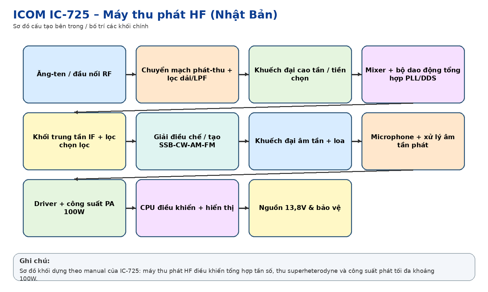
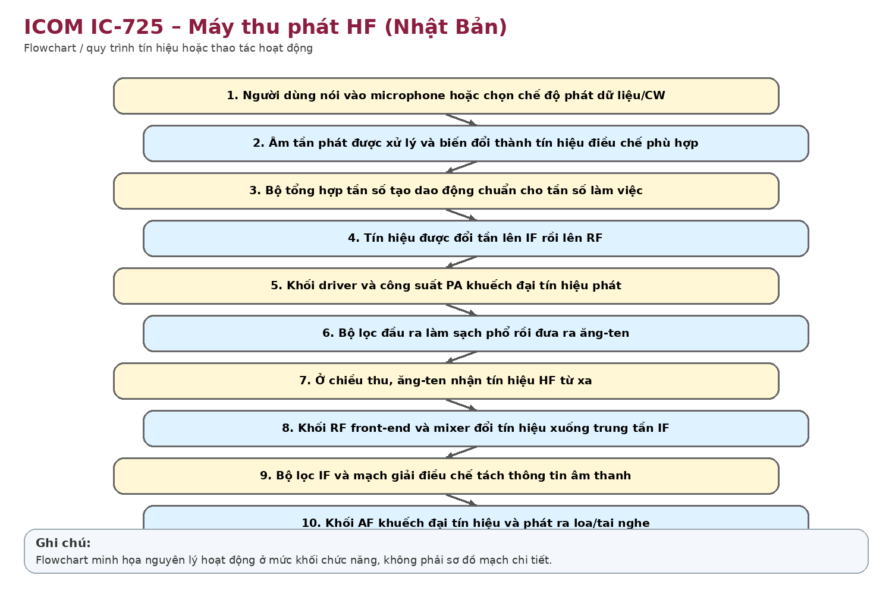
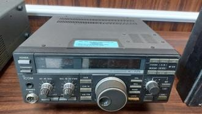

Nhận dạng & niên đại
Công dụng
Công dụng chung
Thu phát thoại và tín hiệu vô tuyến ở dải HF; liên lạc xa khi điều kiện truyền sóng cho phép.
Trong thông tin tín hiệu đường sắt
Có thể dùng làm kênh liên lạc vô tuyến dự phòng/khẩn cấp, liên lạc công tác hoặc khi mạng hữu tuyến bị gián đoạn. Cần hồ sơ Công ty để xác định đúng nhiệm vụ lịch sử của máy.
Phạm vi làm việc
HF có thể liên lạc hàng trăm đến hàng nghìn km nhờ truyền sóng mặt đất/tầng điện ly, nhưng chất lượng phụ thuộc tần số, thời điểm, anten và điều kiện lan truyền.
Cấu tạo bên trong

Khối thu superheterodyne nhiều lần đổi tần; bộ tổng hợp tần số PLL; mạch lọc và IF; giải điều chế; mạch phát SSB/CW/AM (FM tùy option); bộ khuếch đại công suất RF; CPU điều khiển, bộ nhớ kênh, hiển thị, microphone và cổng anten 50 Ω.
Cách thức hoạt động

Khi thu, tín hiệu anten được lọc/khuếch đại rồi trộn với dao động nội để chuyển xuống trung tần, lọc và giải điều chế thành âm thanh. Khi phát, âm thanh/tín hiệu được điều chế lên sóng mang HF, khuếch đại qua tầng công suất rồi đưa ra anten.
Thông số kỹ thuật
Thông số chính
Thu khoảng 0,5–30 MHz; phát trên các băng HF theo phiên bản thị trường; SSB/CW khoảng 10–100 W, AM tới khoảng 40 W; FM có thể cần option; trở kháng anten 50 Ω; nguồn 13,8 VDC; dòng phát lớn cỡ 20 A.
Nguồn điện / cấp nguồn
13,8 VDC, cực âm nối mass; thường dùng nguồn công suất lớn như IC-PS30 hoặc nguồn DC tương đương.
Giá trị lịch sử – trưng bày
Đại diện cho giai đoạn máy vô tuyến bán dẫn, tổng hợp tần số và điều khiển số được dùng rộng rãi cuối thế kỷ XX.
Tình trạng quan sát
Ảnh cho thấy mặt máy, núm chỉnh và đồng hồ hiển thị còn khá đầy đủ; vỏ có dấu oxy hóa/bụi. Chưa xác định tình trạng phát/thu.
Ảnh hiện vật


Xác minh thêm & nguồn tham khảo
Căn cứ mốc sử dụng tại Việt Nam/ĐSVN:
Ước
tính theo niên đại model; cần thẻ tài sản/biên bản cấp phát.